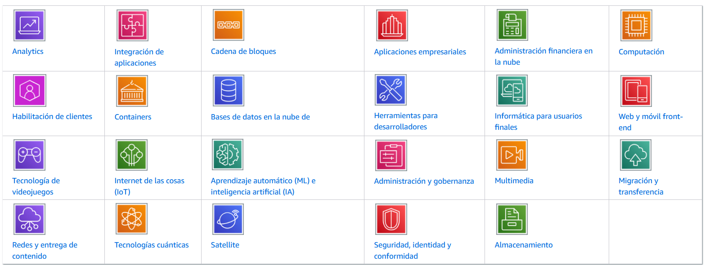
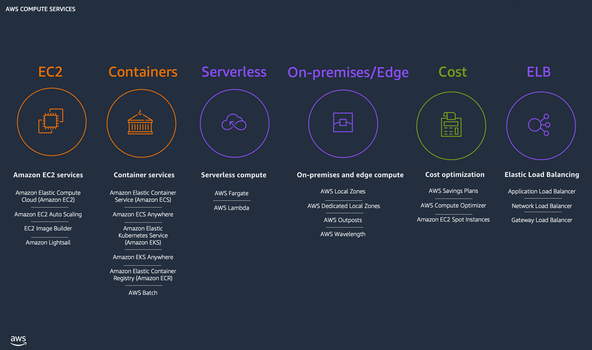

AWS
Amazon Web Services ofereix un ampli conjunt de productes globals basats en el núvol que inclouen computació, emmagatzematge, bases de dades, anàlisi, xarxes, dispositius mòbils, eines per a desenvolupadors, eines d’administració, IoT, seguretat i aplicacions empresarials: a petició, disponibles en segons, amb preu de pagament per ús.
Hi ha més de 200 serveis d’AWS disponibles, des de l’emmagatzematge de dades fins a les eines d’implementació, passant pels directoris al lliurament de contingut.
Els nous serveis es poden proveir ràpidament, sense les despeses fixes inicials. Això permet a les empreses, les startups, les petites i mitjanes empreses i els clients del sector públic accedir als components que necessiten per respondre ràpidament als canviants requisits empresarials. En aquest document tècnic s’ofereix informació general dels avantatges del núvol d’AWS i s’hi presenten els serveis que componen la plataforma.
Computació en el núbol¶
La computació al núvol consisteix en el lliurament baix demanda de potència de computació, bases de dades, emmagatzematge, aplicacions i altres recursos de TI a través d’una plataforma de serveis al núvol mitjançant Internet pagant per ús.
Ja siga que executeu aplicacions que comparteixin fotos amb milions d’usuaris mòbils o que recolze les operacions crítiques de la empresa, una plataforma de serveis al núvol proporciona accés ràpid a recursos de TI flexibles i de baix cost. Amb la computació al núvol, no necessita realitzar grans inversions inicials en maquinari ni dedicar molt de temps a la pesada tasca d’administrar aquest maquinari.
Serveis¶
Els diferents serveis que ofereix aws s’agrupen en les següents categories:

{kind=link}
Serveis de Computació

{kind=link}
Preus en aws¶
AWS ofereix un sistema de pagament per ús per als preus de la gran majoria dels serveis de núvol. Amb AWS només pagues pels serveis individuals que necessites durant el temps que els utilitzes, sense contractes a llarg termini ni llicències complexes.
Els preus d’AWS són semblants a les tarifes dels serveis d’aigua i electricitat. Només pagues pel que consumeix i, una vegada cancel·les el servei, no s’apliquen costos addicionals ni quotes de cancel·lació.